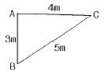
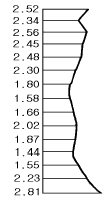

지적산업기사 (2002-03-10 기출문제)
1과목: 지적측량
1. 5cm 가 늘어난 50m 짜리 포제 권척으로 측정한 300m 의 실제거리는?
- 300.3m
- 300.⑤m
- 299.7m
- 299.95m
(정답률: 55%)

2. 광파거리측거기의 측정원리 중 가장 타당한 것은?
- 광원에 의한 측정이다.
- 광파의 위상차에 의한 측정이다.
- 빛의 굴절에 의한 측정이다.
- 빛의 복사원리를 이용한 것이다.
(정답률: 알수없음)
3. 축척변경 시행지역내 토지의 이동시기는?
- 공사개시일
- 사업공고일
- 확정공고일
- 공사완료일
(정답률: 알수없음)
4. 경위의측량방법에 의한 교회법으로 도근측량을 실시할 때 점간거리의 제한은?
- 평균 100m
- 평균 200m
- 평균 300m
- 평균 400m
(정답률: 알수없음)
5. 세부측량에서 교회법에 의한 교각 중 가장 오차가 적은 것은?
- 30°
- 60°
- 90°
- 120°
(정답률: 30%)
6. 경사거리 88.96m를 측정하고 조준의로 경사분획을 측정한 결과 22분획이었다. 이 때의 수평거리는?
- 86.88 m
- 87.88 m
- 88.88 m
- 89.88 m
(정답률: 30%)
7. 축척 1/1200지적도에서 분할토지의 원면적이 1700m2일 때 신구면적의 교차한계는?
- 83m2
- 11m2
- 33m2
- 28m2
(정답률: 60%)
8. 도곽선 제도에서 도면에 등록하는 도곽선의 폭은?
- 0.01mm
- 0.1mm
- 0.3mm
- 0.5mm
(정답률: 73%)
9. 다음은 측량준비도의 작성에 대한 설명이다. 틀린 것은?
- 측량대상 토지의 경계선, 지번, 지목을 기재한다.
- 인근 토지의 경계선, 지번, 지목을 기재한다.
- 행정구역선과 그 명칭을 기재한다.
- 도곽선에 0.5 밀리미터 이상의 신축이 있는 때에는 그 보정량을 기재한다.
(정답률: 34%)
10. 지적측량을 위한 거리측정을 광파측거기로 실시할 경우 규정하고 있는 허용 표준편차는?
- ± (1mm + 5ppm)
- ± (5mm + 5ppm)
- ± (10mm + 5ppm)
- ± (15mm + 5ppm)
(정답률: 알수없음)
11. 축척 1/1200 지적도상의 30cm는 지상의 실제거리 몇 m에 해당 하는가?
- 90m
- 180m
- 360m
- 720m
(정답률: 64%)
12. 경위의측량방법에 의하여 도근측량을 실시한 후의 계산 방법으로 사용되지 않는 것은?
- 망평균계산법
- 도선법
- 다각망도선법
- 교회법
(정답률: 알수없음)
13. 측판측량방법에 의한 세부측량을 교회법으로 시행할 때 방향각의 교각 범위는?
- 45° ‾ 90°
- 30° ‾ 120°
- 30° ‾ 150°
- 0° ‾ 180°
(정답률: 64%)
14. 축척 1/1200을 1/600으로 잘못 알고 측정한 면적이 300m2일 때 실제면적은?
- 300m2
- 600m2
- 900m2
- 1200m2
(정답률: 50%)
15. 행정구역의 도경계와 군경계가 중복이 될 경우 다음 어느 것이 타당한가?
- 군경계만 그린다.
- 도경계만 그린다.
- 2개 경계 모두를 같이 그린다.
- 소관청이 임의로 그릴 수 있다.
(정답률: 20%)
16. 지적도면에 등록하는 행정구역선의 폭은 얼마로 제도해야 하는가?
- 0.1mm
- 0.2mm
- 0.3mm
- 0.4mm
(정답률: 17%)
17. 지적삼각보조측량에서 수평각의 측각공차 중 삼각형 내각 관측치의 합과 기지값인 180도와의 차를 규정한 값은?
- ± 20초 이내
- ± 30초 이내
- ± 40초 이내
- ± 50초 이내
(정답률: 알수없음)
18. 다음 그림과 같은 삼각형의 AB = 3m, BC = 5m, CA = 4m 일 때 면적은?

- 4m2
- 5m2
- 6m2
- 7m2
(정답률: 80%)
19. 다음 중 데오드라이트의 3축에 해당되지 않는 것은?
- 수평축
- 시준축
- 연직축
- 수준축
(정답률: 64%)
20. 지적제도에 사용되는 기호로 행정구역선의 제도방법 중리.동계를 표시하는 방법으로 옳은 것은?
- 실선과 허선은 각각 3㎜로 연결한다.
- 실선 3㎜, 허선 2㎜로 연결한다.
- 실선 4㎜, 허선 2㎜로 연결한다.
- 실선 3㎜, 허선 1㎜로 연결한다.
(정답률: 알수없음)
2과목: 응용측량
21. 사진의 크기가 24 x 24cm이고 초점거리 152mm, 비행고도 6000m일 때 사진의 포괄면적은 대략 얼마인가?
- 40.2 km2
- 56.4 km2
- 79.5 km2
- 89.7 km2
(정답률: 알수없음)
22. 노선의 직선부와 원곡선부 사이에 삽입하는 완화곡선의 반경이 원곡선의 반경과 같게 되는 지점은?
- 완화곡선의 시점
- 완화곡선의 중점
- 완화곡선의 4분점
- 완화곡선의 종점
(정답률: 30%)
23. 지형도에서 A점은 200m 등고선 위에 있고 B점은 220m 등고선 위에 있다. 두 점 사이의 경사가 20%이면 두 점 사이의 수평거리는?
- 100
- 120
- 150
- 200
(정답률: 37%)
24. 각 점들이 중력방향에 직각으로 이루어진 곡면을 나타낸 것으로 옳은 것은?
- 수준면
- 수평면
- 정수면
- 지평면
(정답률: 알수없음)
25. 노선측량에서 기점부터 Ｂ.Ｃ까지의 거리가 523.50ｍ이고 Ｃ.Ｌ이 160ｍ이면 기점에서 Ｅ.Ｃ까지의 거리는?
- 583.5ｍ
- 683.5ｍ
- 783.5ｍ
- 883.5ｍ
(정답률: 59%)
26. 다음 경사표시 방법 중 철도노선의 경사표시에서 주로 사용되는 것은?
- n
- n/10
- n/100
- n/1000
(정답률: 30%)
27. 다음 중 등고선이 삽입되어 있는 지도는?
- 조정집성 사진지도
- 반조정 집성 사진지도
- 약조정 집성 사진지도
- 정사투영 사진지도
(정답률: 30%)
28. 다음에서 지형도상에 등고선을 기입하는 방법이 아닌 것은?
- 종단점법
- 방안법
- 지성선 이용법
- 영선법
(정답률: 8%)
29. 항공사진 측량에서 경사변위에 대한 설명 중 틀린 것은?
- 경사변위는 사진상의 위치에 따라 다르다.
- 지상에서 직선은 사진상에서도 직선이다.
- 경사변위는 주점으로 부터 방사적이다.
- 지상에서 4각형의 토지는 경사변위에 의하여 사진상에서는 사다리꼴이 된다.
(정답률: 30%)
30. 삼각형의 두 변의 길이가 각각 30m, 20m 이고 그 사이에 낀 각이 30° 일 때 다른 변의 길이는?
- 16.1m
- 17.1m
- 18.1m
- 19.1m
(정답률: 알수없음)
31. 광산용 트랜싯의 주망원경과 시준선이 연직상방으로 10㎝ 편위된 상위 망원경으로 갱내에서 시준거리 20m에 있는 점의 연직각을 관측할 경우 시준선의 편심으로 인한 각오차는?
- 15분 11초
- 16분 11초
- 17분 11초
- 18분 11초
(정답률: 9%)
32. 원곡선의 설치에서 곡선반경 250m, 교각 60° 일 때 곡선 길이는?
- 212.9 m
- 250.0 m
- 260.8 m
- 261.8 m
(정답률: 알수없음)
33. 60° 경사진 사갱에서 사거리가 100m이고 시준선에 5mm의 시준오차가 생길 때 수평각에 미치는 오차는?
- 42″
- 30″
- 15″
- 21″
(정답률: 0%)
34. 항공사진을 입체시 하였을 때의 과고감에 대한 설명으로 옳지 않은 것은?
- 산지는 실제보다 돌출하여 높고 기복이 심하게 보인다.
- 계곡은 실제보다 얕게 보인다.
- 산중턱 경사면은 실제의 경사보다 급한 느낌을 준다.
- 촬영에 사용한 렌즈의 촛점거리, 사진의 중복 등에 따라 변한다.
(정답률: 54%)
35. 수준측량에서의 오차의 제한이 5km에 대하여 15mm일 때 편도 2km거리의 왕복측량에 대한 제한 오차는?
- 6.0mm
- 9.4mm
- 12.1mm
- 13.4mm
(정답률: 40%)
36. 깊이가 500m 되는 2개 수갱 입구의 지상거리가 130m일 때 지하 끝지점의 수갱 사이의 직선거리와는 얼마나 차이가 있는가? (단, 지구의 반경 = 6,370km)
- 0.1cm
- 1.0cm
- 10.0cm
- 99.9cm
(정답률: 알수없음)
37. 비행기로 촬영할 때와 같은 상태를 도화기로 재현하는 표정은?
- 내부표정
- 상호표정
- 접합표정
- 절대표정
(정답률: 알수없음)
38. 노선측량을 실시하려고 할 때의 측량 순서를 바르게 나타낸 것은?
- 도상계획 → 답사 → 예측 → 공사측량
- 답사 → 예측 → 도상계획 → 공사측량
- 답사 → 예측 → 공사측량 → 도상계획
- 예측 → 답사 → 도상계획 → 공사측량
(정답률: 알수없음)
39. 다음 그림과 같은 모양의 면적을 사다리꼴 공식으로 구하려고 할 때 옳은 값은? (단, 각 지거의 간격은 4m 임)

- 126.44m2
- 115.78m2
- 1⑤.44m2
- 101.56m2
(정답률: 30%)
40. 다음 중 가장 정확한 수준측량방법은?
- 직접수준측량
- 삼각수준측량
- 스타디아 수준측량
- 기압수준측량
(정답률: 19%)
3과목: 토지정보체계론
41. 중세후기(A.D. 900∼1500)의 도시발달에 있어 가장 큰 인자(因子)는?
- 군사, 성벽
- 상공업, 교통
- 행정
- 녹지, 공간
(정답률: 31%)
42. 토지이용계획을 수립함에 있어서 정성적(定性的)인 예측변수는?
- 인구규모
- 가구수
- 지역소득
- 가치관의 변화
(정답률: 알수없음)
43. 도시 세력권 조사 사항 중 해당되지 않는 것은 어느것인가?
- 세력권 내의 토지 이용관계 조사
- 세력권 내의 교통 운수상황 조사
- 세력권 내의 경제 변천상황 조사
- 세력권 내의 시,읍,면 상호관계와 도시발달의 연혁조사
(정답률: 10%)
44. 도시계획의 기본개념에 속하지 않는것은?
- 도시내의 물리적 재산의 사적이용에 대한 제한으로 공공의 이익과 안전을 기한다.
- 도시의 하부구조를 계획하고 시설하는 것이다.
- 도시공간 상에 구체적으로 표현하는 물적(物的)계획이다.
- 국토의 이용관리를 모두 포함시켜야 한다.
(정답률: 0%)
45. 다음 소도시에 관한 설명 중 틀린 항목은?
- 도시의 기능과 시설이 고도로 분화되어 있다.
- 경제기반(Economic Base)이 약하다.
- 소도시는 지역중심성이 강하다.
- 대도시에 비해 인구규모가 작다.
(정답률: 31%)
46. 페리의 근린주구의 구성 단위로서 가장 규모가 작은 단위로 우리의 일상생활과 관련 깊은 이웃의 개념이 포함된 단위는?
- 근린분구
- 근린주구
- 인보구
- 근린지역
(정답률: 알수없음)
47. 에베네저 하워드(Ebenezer Howard)의 전원도시구상에 대한 설명으로 옳지 않은 것은?
- 도시의 계획인구를 제한한다.
- 토지는 원칙적으로 사유화한다.
- 도시주변의 농업지역은 영구히 보전한다.
- 시민경제를 유지할 수 있는 산업을 유치한다.
(정답률: 알수없음)
48. 도시계획을 위한 기초조사의 일반 지침으로 적당하지 않은 것은?
- 장기계획에서는 자연환경, 시설현황 조사 등에 대해 역점을 둔다.
- 본 조사에서는 특정부문의 발전방향에 대해 중점 조사한다.
- 가시적인 측면에서 비가시적인 측면으로 진행한다.
- 외적고찰에서 내적고찰로 진행한다.
(정답률: 알수없음)
49. 주거단지내 공동공간을 배치· 조성하는 가장 큰 목적은?
- 시설이용의 편익증대
- 사회적 접촉기회의 확대
- 방어공간의 확보
- 공간활용의 극대화
(정답률: 알수없음)
50. 환지방식으로 도시개발사업을 할 때, 원칙적으로 필요한 경비를 확보하는 방법은?
- 체비지의 매각
- 수익자 부담금
- 지방교부세
- 국가 및 자치단체의 보조
(정답률: 10%)
51. 다음 중에서 토지이용 강도를 맞게 설명한 것은?
- 하나의 대지에 지어진 건물의 층 높이 관계
- 건축면적과 공지의 비율
- 단위면적의 토지위에 나타나는 특정 기능의 정도
- 건폐율을 용적율로 나눈 값을 백분율로 표시하는 것
(정답률: 알수없음)
52. 건축법에서 규정하고 있던 도시설계제도와 도시계획법상의 상세계획을 통합하여 용도지역제도를 보완하고 도시의 기능과 미관을 증진시키기 위한 계획은?
- 도시기본계획
- 토지이용계획
- 지구단위계획
- 지역계획
(정답률: 20%)
53. 어느 도시의 산업인구 추정을 했더니 인구 10만에 취업율 40%이고, 그중 제조업 종사자는 3만이었다. 산업인구중 제조업 인구 구성비는?
- 30%
- 40%
- 60%
- 75%
(정답률: 17%)
54. 토지이용에 유연성과 융통성을 폭넓게 부여하려는 비유클리드적인 용도지역지구제(Non-Euclid Zoning)에 포함되지 않는 내용은?
- 계획단위 개발(Planned Unit Development)
- 산업단지(Industrial Park)
- 개발권 이전(Transfer of Development Right)
- 계약 용도제(Contract Zoning)
(정답률: 10%)
55. 공공분야에서 제기되는 집단적 갈등을 해소하거나 건설적으로 관리하기 위한 기본원칙으로 부적절한 사안은?
- 문제와 사람을 분리시켜, 협상주체를 상호 비난하는 구조에서 탈피한다.
- 입장보다는 이해관계에 초점을 맞춘다.
- 다양한 대안보다는 단독의 대안을 추구하여 합의에 이른다.
- 협상산출이나 협상결과는 객관적인 기준에 의한다.
(정답률: 알수없음)
56. 다음중 대공원에 속하는 것은?
- 보통공원
- 근린공원
- 소년공원
- 유년공원
(정답률: 0%)
57. 도시학자인 패트릭 게데스(P. Geddes)가 구분한 산업혁명 이후 도시에서의 시민생활기능에 포함되지 않는 것은?
- 생산기능(work)
- 위락기능(folk)
- 교통기능(transportation)
- 주민활동(Place)
(정답률: 0%)
58. 주거단지내 도로의 배치기준에 대한 설명으로 잘못된것은?
- 가능한 한 자동차의 통과교통을 배제하여 거주공간의 안전성을 도모한다.
- 같은 주거단지 내에서는 도로의 폭을 동일하게 계획한다.
- 곡선형 도로계획을 통하여 운전자의 주의 집중과 감속을 유도한다.
- 도로의 방향성 등을 명확하게 하여 방문자에게 혼란을 일으키지 않도록 계획한다.
(정답률: 알수없음)
59. 도시개발 사업지역의 보유지란 다음중 어느 것인가?
- 도시개발 사업지역의 공공시설 부지를 말한다.
- 도시개발 사업지역의 보존지역을 말한다.
- 도시개발 사업계획이 정하는 목적을 위하여 일정한 토지를 환지로 정하지 아니한 토지를 말한다.
- 도시개발 사업 지구내에 있는 국· 공유지를 말한다.
(정답률: 20%)
60. 시가화조정구역의 지정에 관련된 내용으로 잘못된 것은?
- 도시의 무질서한 시가화를 방지
- 도시주변의 자연환경을 보전하기 위하여 개발을 제한
- 도시의 계획적· 단계적 개발을 도모
- 시가화를 유보할 필요가 있다고 인정되는 경우에 지정
(정답률: 알수없음)
4과목: 지적학
61. 임시토지조사국에서 지적제도 창설 당시 실시한 토지사정의 대상은?
- 지역선
- 소유권 이동
- 강계와 토지 소유자
- 토지의 이동
(정답률: 58%)
62. 지적측량성과도에 의하여 지적공부의 정리를 신청하였다. 이 성과도에 의한 토지표시사항의 공시 효력이 발생되는 시기는?
- 접수일
- 등기일
- 등록일
- 통지일
(정답률: 19%)
63. 지적측량은 책임성이 강조되고 그 성과를 영구적으로 유지하는 특성이 있다. 이 특성을 유지해야하는 필요성은?
- 공학적 측량성과의 증거유지
- 시공상 하자의 인책 근거유지
- 등기공신력 유지
- 토지거래안전 도모
(정답률: 16%)
64. 지번색인표에 대한 설명 중 맞는 것은?
- 지번색인표는 일종의 지적공부이다.
- 지번색인표는 당해 지번 설정지역의 지적도 축척의 1/10을 기준으로 한다.
- 지번색인표는 도면의 관리상 필요한 경우 지번 설정 지역별로 작성, 비치할 수 있다.
- 지번색인표는 일람도별로 작성하지 않는다.
(정답률: 46%)
65. 경계 불가분의 원칙이 적용되는 경계의 특징이라 볼 수 없는 것은?
- 경계는 설치자의 소속
- 경계는 위치만 존재
- 필지간 1개 존재
- 경계는 필지간 공통작용
(정답률: 37%)
66. 다음 중 지적의 본질이 아닌 것은?
- 토지에 대한 모든 물권 변동사항의 등록을 목적으로 한다.
- 일필지에 대한 정보를 체계적으로 등록한다.
- 토지 표시사항의 이동사항을 결정한다.
- 실제와 부합되는 자료대로 함을 원칙으로 한다.
(정답률: 47%)
67. 2필지 이상의 토지를 합병하기 위한 조건이라고 볼 수 없는 것은?
- 지반이 연속되어 있어야 한다.
- 지목이 동일하여야 한다.
- 축척이 달라야 한다.
- 지번설정지역이 동일하여야 한다.
(정답률: 40%)
68. 다음 중 토지멸실(土地滅失)에 해당되는 것은?
- 하천성
- 해면성
- 등록 전환
- 지번설정지역 변경
(정답률: 알수없음)
69. 우리나라 지번의 부번방식(附番方式)이 아닌 것은?
- 사행식(蛇行式)
- 기우식(奇隅式)
- 단지식(團地式)
- 우수식(隅數式)
(정답률: 40%)
70. 지적제도가 성립되지 않고는 그 제도가 성립할 수 없는 것은?
- 조세제도
- 호적제도
- 토지이용제도
- 부동산등기제도
(정답률: 알수없음)
71. 다음 중 적극적 지적제도의 설명 중 틀린 것은?
- 등록된 권원의 효력을 국가에서 보장한다.
- 포지티브시스템이라 한다.
- 토지등록사항에 대한 사실심사권이 인정되지 않는다.
- 대만이나 스위스에서도 이 개념을 채택하고 있다.
(정답률: 알수없음)
72. 다음 사항 중 다른 것과 관련이 적은 것은?
- 양안
- 지계
- 문기
- 입안
(정답률: 알수없음)
73. 일반공중의 보건, 휴양 및 정서생활을 향상하기 위하여 일정한 구역내에 필요한 시설을 갖춘 토지로서 도시계획상 결정고시된 토지의 지목은?
- 유원지
- 체육용지
- 학교용지
- 공원
(정답률: 37%)
74. 다음은 구한말시대에 운영되던 부서이다. 설치순서가 옳은 것은?
- 탁지부 양지국→ 탁지부 양지과→ 양지아문→ 지계아문
- 양지아문→ 지계아문→ 탁지부 양지국→ 탁지부 양지과
- 지계아문→ 양지아문→ 탁지부 양지국→ 탁지부 양지과
- 양지아문→ 탁지부 양지국→ 탁지부 양지과→ 지계아문
(정답률: 30%)
75. 지적공부정리를 위한 토지이동의 신청을 하는 경우, 측량성과도를 첨부해야 하는 토지이동이 아닌 것은?
- 등록전환
- 면적정정
- 경계정정
- 합병
(정답률: 19%)
76. 우리나라 현행 지적법의 3대 이념에 속하지 않는 것은?
- 지적 국정주의
- 지적 공개주의
- 지적 형식주의
- 지적 국유주의
(정답률: 47%)
77. 토지조사 당시 소유자가 다른 경계선을 무엇이라 하였는 가?
- 지역선
- 경계선
- 지계선
- 강계선
(정답률: 알수없음)
78. 토지등록에 있어서 직권등록주의를 맞게 설명한 것은?
- 토지의 이동이 있을 때에는 소관청이 직권으로 조사 또는 측량하여 결정한다.
- 토지이동 정리는 소유자 신청주의이기 때문에 신청에 의해서만 가능하다.
- 신규등록은 소관청이 직권으로만 등록이 가능하다.
- 토지의 이동이 있을 때에는 토지소유자의 신청에 의하여 소관청이 이를 결정한다. 다만 신청이 없을 때에는 소관청이 직권으로 이를 조사 또는 측량하여 결정한다.
(정답률: 알수없음)
79. 다음 중 토지대장의 등록사항이 아닌 것은?
- 경계
- 지번
- 지목
- 면적
(정답률: 34%)
80. 해안빈지를 신규등록하는 경우에 그 토지의 소유자를 조사 등록할 권한을 가진 자는?
- 등기소장
- 세무서장
- 소관청
- 지방자치단체장
(정답률: 30%)
5과목: 지적관계
81. 지적본래의 기능면에서 비추어 다음의 지적공부 등록사항 가운데 기본적인 등록사항으로 볼 수 없는 것은?
- 지번
- 토지등급
- 좌표
- 지목
(정답률: 알수없음)
82. 다음 중 등기능력이 없는 물건은?
- 공장재단
- 수목의 집단
- 하천부지
- 광업재단
(정답률: 40%)
83. 민법상 조건의 성취로 인해 법률행위의 효력이 소멸되는 것은?
- 정지조건
- 해제조건
- 수의조건
- 소극조건
(정답률: 19%)
84. 다음중 새로이 측량을 하지 않고도 필지의 면적을 정할수 있는 토지 이동은?
- 신규등록
- 등록전환
- 토지분할
- 토지합병
(정답률: 알수없음)
85. 토지의 지목을 지적도에 정리할 때 지목과 부호의 연결이 바른 것은?
- 공장용지 → 공
- 하천 → 하
- 사적지 → 적
- 과수원 → 과
(정답률: 알수없음)
86. 갑은 토지의 거래계약 허가구역 내의 토지를 매매하기 위하여 시장· 군수에게 거래계약 허가신청을 하였으나 15일의 기간이 지나도 허가여부가 결정되지 않고 있다. 갑이 취할 수 있는 조치로서 옳은 것은?
- 기간의 만료한 다음날 허가가 있는것으로 보고 계약을 체결한다.
- 불허가처분이 있는것으로 보고 행정심판을 제기한다.
- 불허가처분이 있는것으로 보고 행정소송을 제기한다.
- 다시 허가신청을 한다.
(정답률: 알수없음)
87. 지적공부에 해당하지 않는 것은?
- 일람도
- 토지대장
- 임야도
- 임야대장
(정답률: 34%)
88. 환지예정지 지정이 있는 경우에 종전토지 소유자의 권리의무에 관한 다음 기술중 타당한 것은?
- 소유권은 가지고 있으나 사용· 수익권은 상실한다.
- 사용· 수익권은 가지고 있으나, 처분권을 상실한다.
- 소유권과 그에 속한 수익권은 가지나 사용권은 상실한다.
- 소유권과 그에 속한 모든 권리는 그대로 존재한다.
(정답률: 15%)
89. 다음의 용도지역 중에서 건폐율(建蔽率)이 가장 낮은 지역은?
- 전용주거지역
- 전용공업지역
- 준공업지역
- 준주거지역
(정답률: 알수없음)
90. 지적법상 토지경계의 개념을 설명한 것 중 올바른 것은?
- 도상 경계이다.
- 자연적 경계이다.
- 인공적 경계이다.
- 경계표시를 말한다.
(정답률: 알수없음)
91. 공동저당에 관한 다음 기술중 타당한 것은?
- 물상보증인이 제공하는 부동산에 설정된 저당권을 말한다.
- 공유부동산에 설정된 저당권을 말한다.
- 동일채권의 담보를 위하여 수개의 부동산위에 설정된 저당권을 말한다.
- 수개의 채권을 담보하기 위하여 1개의 부동산위에 설정된 저당권을 말한다.
(정답률: 29%)
92. 철도, 역사, 차고, 공작창이 집단으로 위치할 경우 그 지목은?
- 철도, 차고는 철도용지이고, 역사는 대지, 공작창은 공장 용지임.
- 역사만 대지이고, 나머지는 철도용지임.
- 공작창만 공장용지이고, 나머지는 철도용지임.
- 모두 철도용지임.
(정답률: 알수없음)
93. 건축법상 건축물의 대지는 몇 미터 이상을 도로에 접하여야 하는가?
- 5미터
- 4미터
- 3미터
- 2미터
(정답률: 0%)
94. 시가화조정구역에 관한 설명 중 틀린 것은?
- 도시의 계획적, 단계적 발전을 위하여 지정한다.
- 일정기간 시가화를 유보할 필요가 있는 경우에 건설교통부장관이 도시계획 결정으로 지정한다.
- 유보기간은 5년이상 20년이내로 하되 건설교통부장관이 도시계획으로 그 기간을 정하여야 한다.
- 구역의 해제는 반드시 도시계획결정 절차를 거쳐야 한다.
(정답률: 25%)
95. 축척 변경 승인 신청서에 첨부할 필요가 없는 서류는?
- 시행 지역의 시가 조사서
- 축척 변경을 해야 할 사유
- 지번별조서
- 토지소유자의 동의서
(정답률: 37%)
96. 국토이용관리법에서 규정하고 있는 국토이용의 기본개념 요소가 아닌 것은?
- 토지의 합리적 이용
- 국토의 특정지역 개발
- 토지의 안정성과 적정한 거래
- 자연환경의 보전
(정답률: 22%)
97. 다음중 지적공부등록사항을 소관청이 직권으로 정정할수 있는 경우는?
- 지적위원회의 적부심사 결과에 의한 정정
- 면적의 정정
- 지적도 재조제 사항의 정정
- 지적측량 성과의 정정
(정답률: 알수없음)
98. 토지이동의 신청시 수수료를 소관청에 납부하지 않아도 되는 것은?
- 신규등록 신청시
- 등록전환 신청시
- 지적측량의 대행시
- 토지분할의 신청시
(정답률: 9%)
99. 부동산 등기로부터 발생하는 효력이 아닌것은?
- 순위확정력
- 추정적 효력
- 대항적 효력
- 공신력
(정답률: 알수없음)
100. 중앙지적위원회에서 할 수 있는 사항을 설명한 것으로 잘못된 것은?
- 토지등록업무의 개선
- 지적측량기술의 연구· 개발
- 지적기술자격취득에 관한 사항
- 지적기술자의 징계
(정답률: 알수없음)